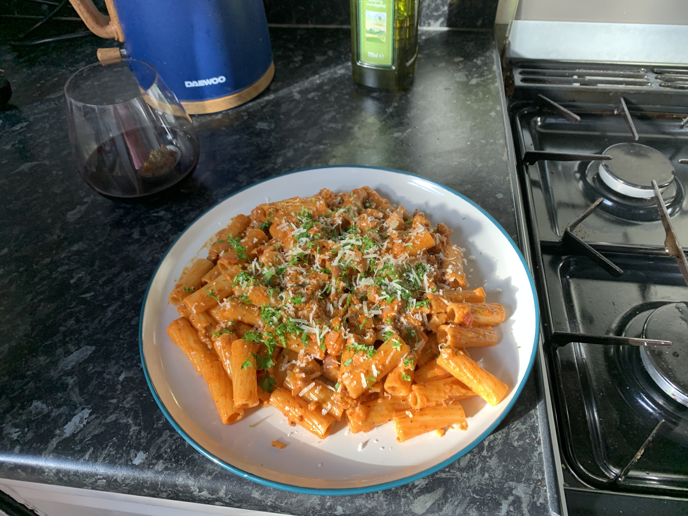

Sausage Gochujang Rigatoni

Sausage Gochujang Rigatoni
You need to try this!
Ingredients for 1
- 3 Good quality sausages
- Half a shallot
- 1 tablespoon of butter
- 1 tablespoon of honey
- 100ml of single cream
- 2 crushed then chopped cloves of garlic
- 120g of rigatoni pasta
- 15g grated parmesan cheese
- 1 Tablespoon of gochujang
- 10g coriander
- Juice of 1 lime
Method
- Peel the skin from the sausages then fry them in olive oil a pan on medium heat, breaking them up as you go.
- Deglaze the pan with a splash of water.
- When sausages are browned remove from the pan.
- Chop shallot and garlic and add to the pan along with your butter.
- Add your pasta to a pan of boiling water and cook til al dente, reserving a ladle of pasta water.
- Add gochujang and cream to the pan.
- Add the cheese, honey and lime juice.
- Re-add the sausage meat and mix together.
- Add salt and pepper.
- When the pasta is done, drain then add to the sauce pan. Use some pasta water if it needs loosening up.
- Add your coriander and stir into the pasta and sauce.
- Serve up and top with grated lime zest and more coriander.
Home